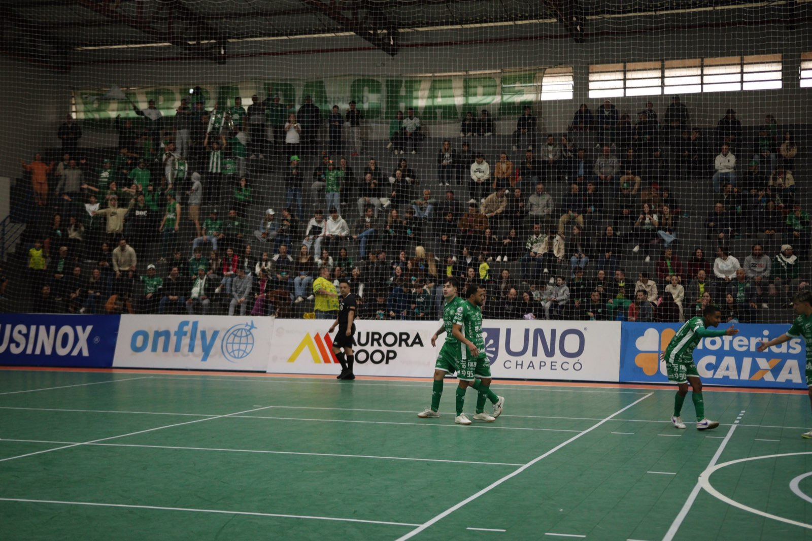
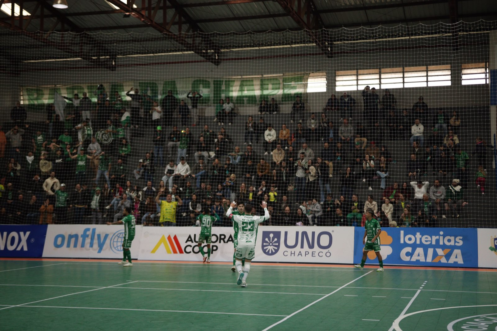
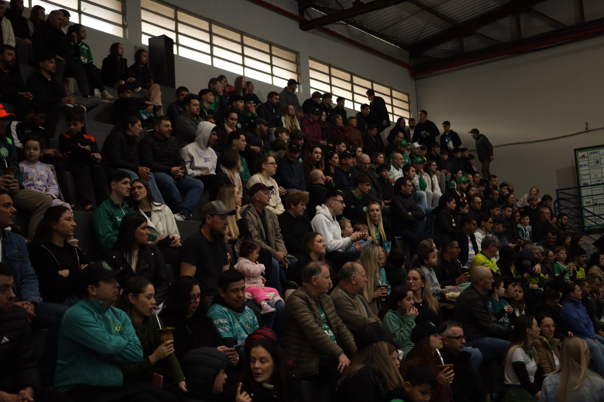

A Prefeitura de Chapecó/Chapecoense/Unochapecó iniciou a venda de ingressos para a partida deste sábado (8), às 19h, contra o Sorriso (MT). O jogo será disputado no ginásio do SESC, em Chapecó, e é válido pela quarta rodada do Campeonato Brasileiro de Futsal.

O Verdão das Quadras chega para o confronto após vencer o América-MG por 4 a 1 na última quinta-feira (30), em Matozinhos (MG). Com o resultado, o time do técnico Leo Schroeder somou seis pontos e ocupa a terceira colocação na tabela de classificação. O Sorriso está em quinto lugar, com quatro pontos. Em caso de vitória em casa, a Chape Futsal assume a vice-liderança da competição nacional.

Serviço de jogo
Os ingressos estão divididos por lotes e os torcedores podem adquirir as entradas de forma antecipada em pontos físicos ou pela internet.
- 1º lote: R$ 20,00
- 2º lote: R$ 25,00
- Meia-entrada: R$ 10,00
- Crianças até 12 anos: acesso gratuito, sem necessidade de retirar cortesia. É obrigatório apresentar documento de identificação na portaria e estar acompanhado por um responsável.
Pontos de venda
- Loja Oficial da Chape Futsal – na rua Paulo Marques, entre as ruas Fernando Machado e Porto Alegre, anexo à Classic Uniformes.
- Loja iXap Sports – na avenida Getúlio Vargas, entre as ruas Paulo Marques e Vitório Cella.
- Site ingressojogo.com.br

Crédito das fotos: @rogersilva_fotografia/@achapefutsal